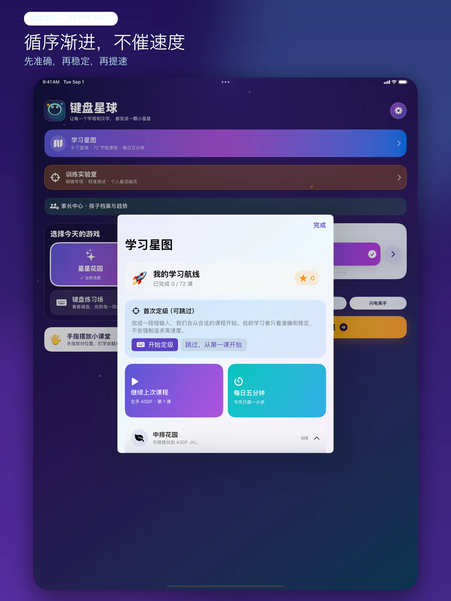

训练实验室只分析自己的进步
在设备本地统计错键率、单键延迟以及二元、三元组合，生成 2、3、4 个弱键专项。标准测试支持 15/30/60/120 秒和 10/25/50/100 词，并展示 Net/Gross WPM、CPM、准确率、稳定性、热力图、最慢组合和速度曲线。
键盘星球面向希望孩子先练准确、再练速度的家庭。新版把原有 32 个训练模式组织成循序渐进的课程，同时把学习分析、家庭进度和个性化题库留在设备本地。
本页介绍的重大更新正在准备送审，当前 App Store 版本可能尚未包含全部新功能。

9 个学习星球包含 72 节短课、可跳过的首次定级、课程前置关系、星级、继续上次课程和“每日五分钟”。每局结束都会显示本局结果、与上次相比的变化和下一步建议。低龄阶段不会用高 WPM 催促孩子。

在设备本地统计错键率、单键延迟以及二元、三元组合，生成 2、3、4 个弱键专项。标准测试支持 15/30/60/120 秒和 10/25/50/100 词，并展示 Net/Gross WPM、CPM、准确率、稳定性、热力图、最慢组合和速度曲线。
最多建立 6 个本地孩子档案，只需昵称和头像，不收集真实生日。家长中心展示今天、7 天和 30 天趋势，可设置每日目标与课程优先；删除、导出和外链等操作设有家长门槛。
内置 1333 条分级内容，覆盖英文单词、短句、汉字拼音、成语和算式。家长还能导入、导出 TXT 或 JSON 自定义题库，让校内内容与孩子的兴趣进入练习。
个人最佳幽灵来自设备上的历史成绩，不连接服务器，也不做陌生人多人竞技。暂停和进入后台的时间不会计入成绩；应用更新不会主动删除已有学习历史。
神兽不是随机贴纸，而是成绩与连击里程碑的文化化反馈。每只神兽拥有自己的造型、入场节奏与声音设计；开启“减少动态效果”时会自动使用更平静的呈现。
神兽不存在可验证的“真实叫声”。应用依据传统形象，以真实动物、自然环境和钟磬声进行原创声音设计。素材来源与许可证已公开。
查看真实界面、完整教程、隐私与无障碍说明，或下载简体中文高分辨率媒体包。